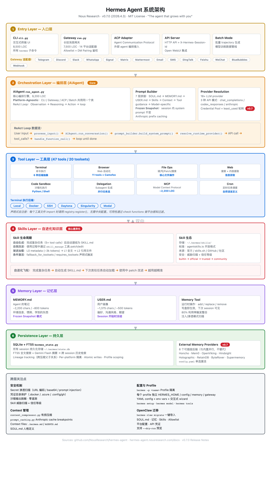

Hermes Agent 是 Nous Research 于 2026 年 2 月发布的开源 AI agent 框架（GitHub，MIT 协议）。截至 2026 年 4 月，GitHub 约 22,000 stars。
官方定位用一句话概括："The agent that grows with you"——住在你服务器上，越用越聪明。
这个定位精准地指出了它和其他 agent 框架的核心差异：不是工具，是伙伴。大多数 agent 框架（包括 OpenClaw）的 skill 需要人工编写和维护，Hermes Agent 能在使用过程中自动生成 skill、自动改进 skill、自动积累对用户的理解。
技术栈：Python（94%），SQLite + FTS5，uv 包管理，pytest 测试框架。
最新版本：v0.7.0（2026.4.3），代号"The Resilience Release"——168 PRs merged，46 issues resolved，689 commits（Release Notes）。
Hermes Agent 的架构围绕一个核心设计原则：platform-agnostic core——无论从 CLI、Gateway、ACP（Agent Communication Protocol）还是 batch 模式进入，底层共用同一个 AIAgent 类（Architecture Docs）。

核心循环实现了经典的 ReAct（Reasoning and Acting）模式：
User input → process_input()
→ AIAgent.run_conversation()
→ prompt_builder.build_system_prompt()
→ runtime_provider.resolve_runtime_provider()
→ API call (chat_completions / codex_responses / anthropic)
→ tool_calls? → model_tools.handle_function_call()
→ loop until done三个关键设计点：
Prompt 组装是 Hermes Agent 最精细的子系统之一。prompt_builder.py 按固定顺序拼接以下内容：
| 顺序 | 来源 | 说明 |
|---|---|---|
| 1 | SOUL.md | 人格定义（类似 OpenClaw 的 SOUL.md） |
| 2 | MEMORY.md | Agent 的笔记：环境信息、惯例、学到的东西 |
| 3 | USER.md | 用户画像：偏好、沟通风格、期望 |
| 4 | Skills | 按需加载的知识文档 |
| 5 | Context files | .hermes.md, AGENTS.md 等项目级上下文 |
| 6 | Tool-use guidance | 工具使用说明 |
| 7 | Model-specific | 针对不同模型的特化指令 |
当 context 超过模型限制时，context_compressor.py 执行有损压缩（lossy summarization）。对 Anthropic 模型，prompt_caching.py 自动插入 cache breakpoints 实现 prefix caching。
47 个内置工具，分布在 20 个 toolset 中。采用声明式自注册——每个工具文件在 import 时调用 registry.register()，无需中央配置文件。
| Toolset | 工具数 | 能力 |
|---|---|---|
| Terminal | 多个 | 命令执行，抽象 6 种后端 |
| Browser | 11 | Web 自动化，Camofox 反检测浏览器（v0.7.0 新增） |
| File | 多个 | 读/写/patch/搜索 |
| Web | 多个 | 搜索 + 内容提取 |
| Code | 多个 | 沙箱化 Python/Shell 执行 |
| Delegation | 1+ | Subagent 生成 |
| MCP | ~2,200 LOC | Model Context Protocol 动态扩展 |
| Memory | 多个 | add/replace/remove 记忆条目 |
| Skills | 多个 | create/patch/edit skill 文档 |
Hermes Agent 的记忆系统是它"越用越懂你"的核心支撑。分三层（Memory Docs）：
| 文件 | 容量 | 内容 |
|---|---|---|
| MEMORY.md | ~2,200 chars / ~800 tokens | Agent 的个人笔记——环境信息、惯例、学到的东西 |
| USER.md | ~1,375 chars / ~500 tokens | 用户画像——偏好、沟通风格、期望 |
memory tool 立即写盘，但下次 session 才生效。目的是保证 prefix cache 命中——如果 system prompt 每次工具调用后都变，cache 全废。
容量管理：80% 利用率触发整合提示，防止无限膨胀。
安全：记忆条目写入前做注入和渗透模式扫描，重复条目自动拒绝。
所有 CLI 和 Gateway session 存储在 ~/.hermes/state.db（SQLite），FTS5 全文索引支持跨 session 搜索。session_search 工具结合 Gemini Flash 做摘要，实现"几个月前聊过的事也能找回来"。
hermes -p <name> 每个 profile 独立 HERMES_HOME8 个可插拔的第三方记忆后端，与内置记忆并行运行，不替代：
| Provider | 能力 |
|---|---|
| Honcho | 辩证式用户建模，profile-scoped host/peer 解析 |
| OpenViking | 知识图谱 |
| Mem0 | 语义搜索 + 自动事实提取 |
| Hindsight | 跨 session 建模 |
| Holographic | 全息记忆 |
| RetainDB | 持久化结构记忆 |
| ByteRover | — |
| Supermemory | — |
Skills 是 Hermes Agent 最具特色的子系统，也是它和其他 agent 框架拉开差距的地方（Skills Docs）。
遵循 agentskills.io 开放标准。SKILL.md 结构：
---
name: skill-name
description: "..."
version: "1.0"
platforms: [macos, linux]
metadata:
hermes:
tags: [...]
category: "..."
fallback_for_toolsets: [...]
requires_toolsets: [...]
---
# When to Use
# Quick Reference
# Procedure
# Pitfalls
# Verification三级加载最小化 token 消耗：
| Level | 操作 | Token 成本 |
|---|---|---|
| L0 | skills_list() | ~3k tokens（只返回 metadata） |
| L1 | skill_view(name) | 加载完整内容 |
| L2 | skill_view(name, path) | 访问特定引用文件 |
触发条件：
skill_manage 工具操作： create / patch / edit / write_file / remove_file
Skill 可以声明在特定工具不可用时自动出现。例如：DuckDuckGo skill 只在 web toolset 缺少 API key 时自动出现——作为降级方案。
6 种执行后端，统一通过 Terminal tools 抽象：
| 后端 | 场景 | 特点 |
|---|---|---|
| Local | 本机开发 | 零配置 |
| Docker | 隔离执行 | 容器加固 + namespace 隔离 |
| SSH | 远程服务器 | 密钥/密码认证 |
| Daytona | Serverless | 闲置近零成本 |
| Singularity | HPC 集群 | GPU 计算场景 |
| Modal | Serverless GPU | 按需 GPU |
Gateway 是一个长驻进程，通过 14 个平台适配器复用统一的 session 路由：Telegram、Discord、Slack、WhatsApp、Signal、Matrix、Mattermost、Email、SMS、DingTalk、Feishu、WeChat、BlueBubbles、Webhook。
跨平台会话连续：可以在 CLI 上开始一个任务，Telegram 上收到通知，Discord 上继续——不丢上下文（The New Stack）。
内置 cron 调度器，支持自然语言定义定时任务。任务结果可投递到任意已连接平台。
支持生成隔离的子 agent，并行处理多个任务流。每个 subagent 有独立的 terminal 和 Python RPC 接口。
v0.7.0 新增 Camofox 反检测浏览器后端，支持持久化 session 和 VNC 调试。
.docker、.azure、.config/gh 等目录自动屏蔽execute_code 的输出做敏感数据 redaction内置 hermes claw migrate 命令，一键导入 OpenClaw 的 SOUL.md、记忆、Skills、Allowlist、平台配置、API 凭证。支持 --dry-run 预览。
本节不重复 OpenClaw 架构细节（详见 openclaw-insight），只聚焦两者的设计取舍差异。
| Hermes Agent | OpenClaw | |
|---|---|---|
| 核心引擎 | AIAgent（agent loop 本身） | Gateway（WebSocket 控制面） |
| 设计中心 | Agent 的执行循环是一切的起点 | 消息路由 + 权限是一切的起点 |
| Agent 与进程关系 | Agent 是独立模块，可嵌入多种宿主 | Pi Agent 直接嵌入 Gateway 进程 |
| 崩溃隔离 | Agent 崩溃不影响 Gateway | Agent 崩溃 = Gateway 崩溃 |
| 维度 | Hermes Agent | OpenClaw |
|---|---|---|
| 主存储 | MEMORY.md + USER.md（frozen snapshot） | 每日日志 memory/YYYY-MM-DD.md + MEMORY.md |
| 索引 | SQLite + FTS5 | SQLite + sqlite-vec（向量） |
| 跨 session | FTS5 搜索 + LLM 摘要 | 向量语义搜索 |
| 外部扩展 | 8 个插件（Honcho, Mem0 等） | 内置即全部 |
| 多用户 | 单用户（profile 隔离） | Per-assistant 隔离 |
| 维度 | Hermes Agent | OpenClaw |
|---|---|---|
| 生成方式 | Agent 自动生成 + 自我改进 | 人工编写、手动维护 |
| 格式标准 | agentskills.io 开放标准 | 三层：Bundled / Managed / Workspace |
| 加载策略 | 渐进式加载（L0→L1→L2） | — |
| 飞轮效应 | 用得越多 skill 越好 | 依赖人工迭代 |
| 维度 | Hermes Agent | OpenClaw |
|---|---|---|
| 目标场景 | 单操作员，零遥测 | 多用户，多设备 |
| 执行隔离 | Docker / Singularity 容器级沙箱 | macOS TCC + Elevated Bash + Tailscale |
| Secret 保护 | 渗透模式扫描 + 凭证目录屏蔽 | — |
| CVE 历史 | 暂无公开 CVE | CVE-2026-25253（token 渗透→Gateway 沦陷） |
| Hermes Agent | OpenClaw | |
|---|---|---|
| GitHub Stars | ~22,000 | ~354,000 |
| 发布时间 | 2026-02 | 2025-11 |
| 平台适配器 | 14 | 23+ |
| 移动端 | — | iOS + Android 原生 |
| 语音能力 | 转录（STT） | Voice Wake + Talk Mode + TTS |
| 场景 | 推荐 | 原因 |
|---|---|---|
| 单人深度研究/开发 | Hermes | 自进化 skill + 深度记忆 |
| 多设备全场景覆盖 | OpenClaw | 23+ 平台 + 移动端 + 语音 |
| 安全敏感 | Hermes | 容器沙箱 + 零遥测 |
| 团队协作 | OpenClaw | Per-assistant 隔离 + 多用户 ACL |
| 快速上手 | OpenClaw | 生态大、文档全、社区活跃 |
| 从 OpenClaw 迁移 | Hermes | 内置一键迁移 |
hermes claw migrate 直接降低了竞品用户的迁移成本。OpenClaw 的安全事件（CVE-2026-25253）可能加速了一部分用户向 Hermes 的迁移。